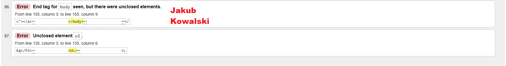

Walidacja - jest to proces sprawdzania strony internetowej pod wzgledem błedów składniowych.
Aby dokonac walidacji strony musimy uruchomic inna strone lub program zwany walidatorem.
Walidator pokazuje gdzie sa błedy oraz podaje jaki to jest błąd z opisem.

 wróć
wróć